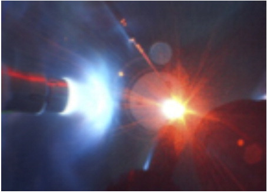

Particle accelerators that produce synchrotron light are mainly synchrotrons, Synchrotron light can be used to emulate regular light, infrared light, or X-rays, synchrotron light is used in many different fields of science and is said that the uses of it is only limited by our imagination. Synchrotron light is used in experiments to devise new cancer therapies, it is used to compare viruses, it can allow detailed analysis and modelling of strain, cracks, and corrosion in the study of materials during production processing, in the field of environmental science it is used in high resolution study of ultra-dilute substances, the identification of species, and the ability to track pollutants as they move in the environment, synchrotron light can also be used to study ancient samples of archaeology. Particle accelerators that collide particles are similar to ones that produce synchrotron light however particle colliders accelerate one particle into another in order to observe the effects of their Collison. These collisions are used mainly in order to study particle physics through the reactions of certain particles as they collide and observing their results, for example the Large Hadron Collider smashes protons together in order to observe what is contained within the protons.
